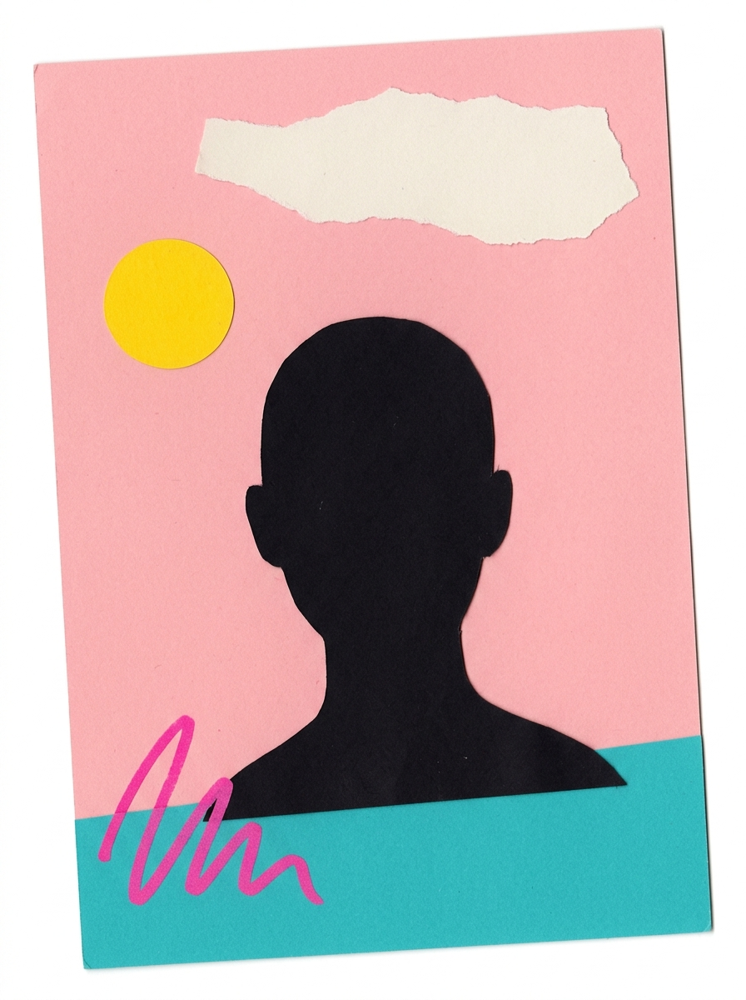

01 — Cut
Every element is separated by hand before it is allowed near a grid. Blunt scissors leave a better edge than a pen tool.
I am Vivien Roux — an art director who cuts, tears and presses images into identities. Everything here was made slowly, on purpose.
See The Work
I work the way a printer works. Cut the shape, place it, look at it for a day, move it two millimetres, then press.
No templates, no filters, no rush. Scissors, a flatbed scanner, a lot of paper, and the patience to leave something alone until it is right.
Eleven cuts. Four hours. One poster that could not have been generated.
Every element is separated by hand before it is allowed near a grid. Blunt scissors leave a better edge than a pen tool.
Pieces are laid out, photographed, slept on, and laid out again. The second arrangement is never the last one.
Scanned at 1200dpi, printed, scanned again. The generation loss is the point — it is what makes it feel touched.